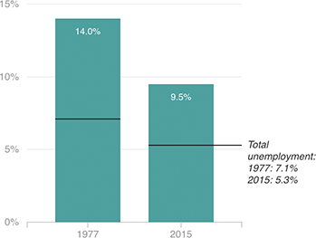

Unemployment Rate
The unemployment rate among African-Americans continues to be well above the national average. In 1977, the black unemployment rate was nearly double the national rate. Today, it’s slightly less than double.

Notes
Unemployment rates are full-year averages.